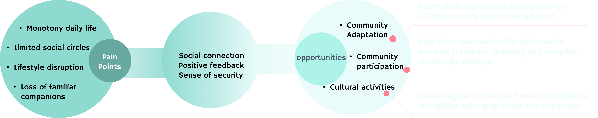
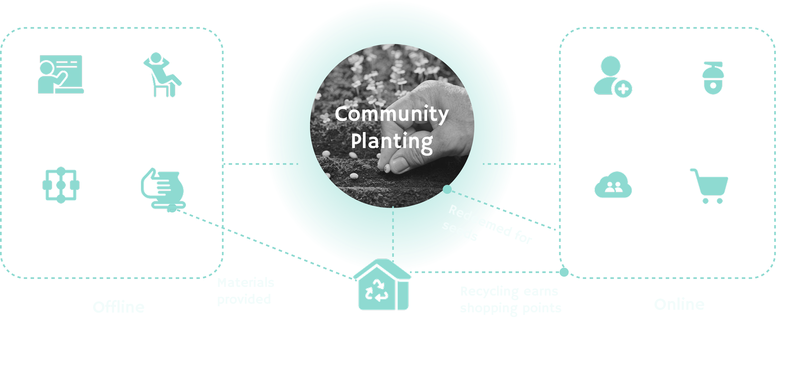
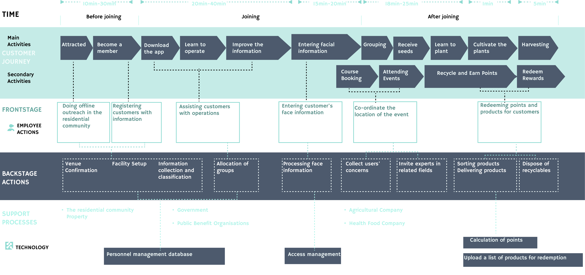
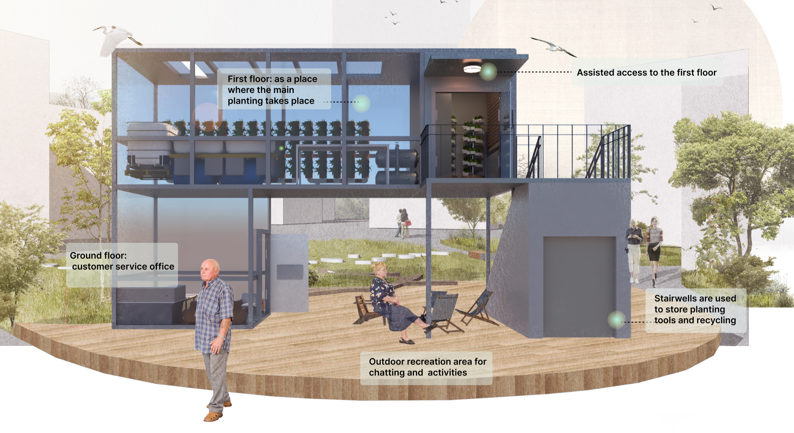
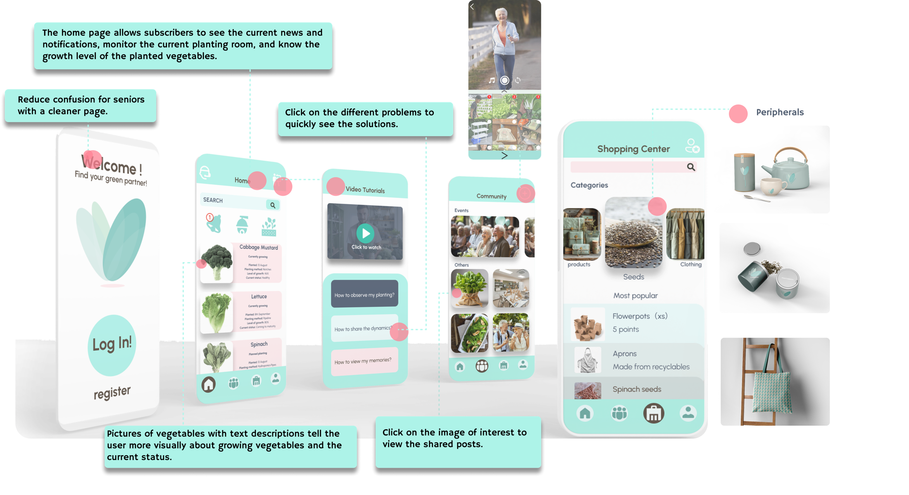

Community Wellbeing
Behavioural Insight
Service Strategy
Overview
Rebuilding belonging for older migrants.
This project focuses on older migrants in China: retired adults who relocate from rural areas to cities to support intergenerational childcare. While they provide essential care for their families, they often enter unfamiliar urban communities with disrupted routines, limited social networks and fewer opportunities to feel useful or connected.
- My role
- User research, field observation, interview synthesis, persona development, service blueprinting, stakeholder mapping, digital touchpoint design and community strategy.
- Research base
- Observations and interviews with older migrants, family members and community contexts, supported by desk research on ageing, urban migration, intergenerational care and community participation.
- Outcome
- A community-based service system that turns planting and recycling into opportunities for social connection, learning, wellbeing and everyday participation.
Who Are Older Migrants?
Older adults relocating from rural areas to cities.
Older migrants often move to support adult children and care for grandchildren. This transition changes their routines, social relationships and sense of value, creating a need for community support beyond family care.

Why Drifting Older Adults?
Population movement is also a social transition.
In China, many retired older adults relocate from rural areas to cities to care for their grandchildren. They leave behind familiar routines, communities and social roles, then have to rebuild daily life in an unfamiliar urban environment.
What Drives This Phenomenon?
Family care, childcare needs and urban settlement pull generations together.

Supporting Older Parents
Under the one-child policy, many adult children became the main source of support for their ageing parents. As they settle in cities, their parents often relocate from rural homes to stay close to family care.

Caring for Grandchildren
Children move to cities for education, but working parents need daily childcare support.

Reducing Family Pressure
Rising childcare costs and larger families make grandparents an important support system.
Changes in Daily Life
Before and after relocating to the city.
Relocation changes older migrants' daily rhythm from self-directed rural routines to childcare-centred urban schedules, reducing their social interaction, autonomy and sense of belonging.
Life Before Relocation


Daily Routine in the City


Relocation changes older migrants' daily rhythm from self-directed rural routines to childcare-centred urban schedules, reducing their social interaction, autonomy and sense of belonging.
From Waste Collecting to a Sense of Value
An unexpected behaviour revealed a deeper social need.
Through observation, I found that many older migrants continued collecting recyclable materials after moving to the city. However, this behaviour is not simply about a lack of money.


Interviews
Personal accounts showed how care, loneliness and self-worth overlap.
Auntie Hou, 62 years old
Besides cooking and shopping, I spend every day with my granddaughter.
I miss my husband and want to take a walk with him in the fields.
Sometimes I feel like a nanny, I feel like I've lost my self-worth.


Uncle Chang, 69 years old
I have come to Beijing to take care of my grandson for three years.
I haven't learned Mandarin yet, I can only speak Hunan dialect.
I don't have many friends here.
Strategy
From pain points to community opportunities.
The strategy turns familiar rural habits into community participation, linking planting, recycling and social activities through offline support and simple digital touchpoints.


Design Criteria
Service Model Canvas
Service Outcome
Spatial and digital touchpoints work together as one community service system.
Service Blueprint

Spatial Service Touchpoints
Underused residential spaces are redesigned as service touchpoints for planting, social activities, support and organised recycling.



Digital Service Touchpoints
The digital touchpoints help older migrants follow planting progress, access simple guidance and share community experiences.


